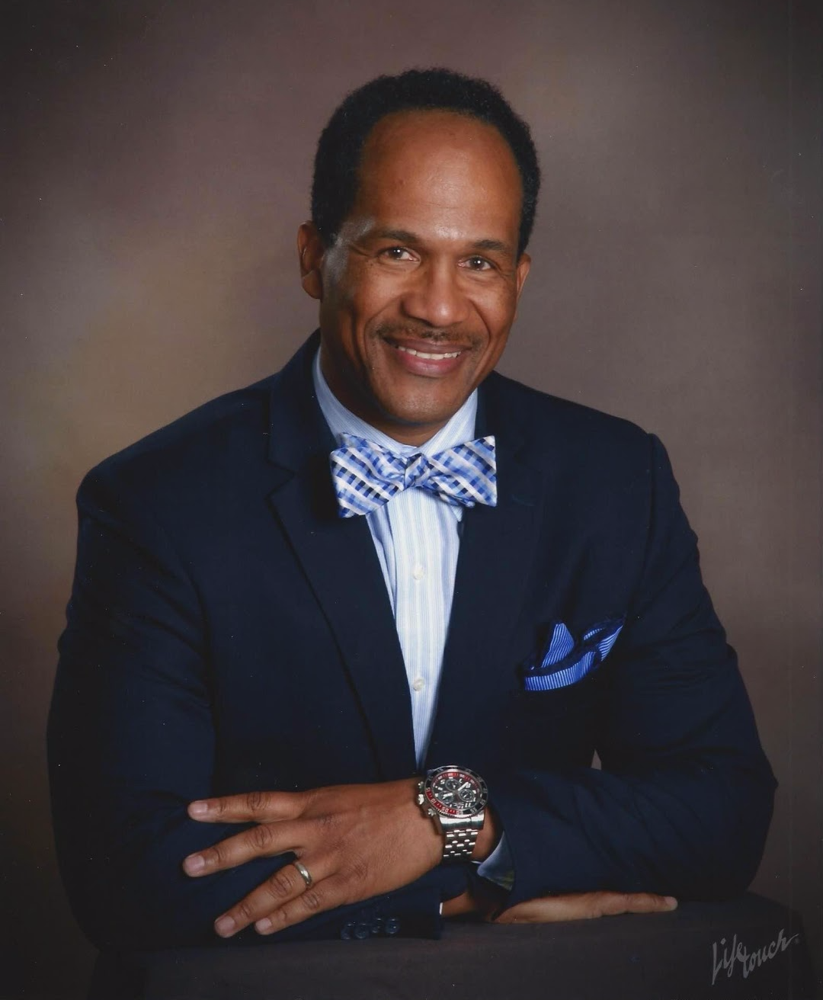

Reverend Warren Riley was born on the Southside of Chicago. He graduated from Dunbar Vocational H.S. in 1984 and later entered the United States Air Force on January 23, 1986. In 2006, Master Sargent Riley retired from the military
at the White House Communications Agency and returned to his home. In June 2006 the Riley family joined New Mount Pilgrim Missionary Baptist Church where they are very active as servants of God. An ordained minister, Reverend Riley
has served in several leadership capacities at the church to including serving as an Executive Board member and as Interim Executive Pastor. Reverend Riley is happily married to Zina Riley and they have two wonderful children Warren
and Myia. Revered Riley received his Associates Degree from the Community College of the Air Force in Contracts Management, a Bachelor’s Degree from Southern Illinois University in Education, a Master’s Degree from Northern Baptist
Theological Seminary in 2013 and a second Master’s from Concordia University Chicago in Leadership and Change Management.